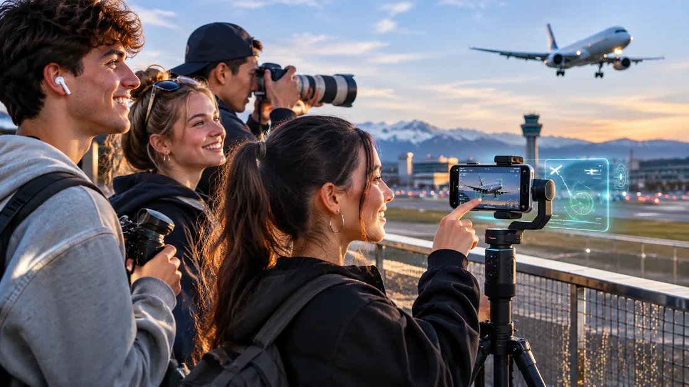

Автори та друзі
Від першого влогу до спонтанних моментів із друзями Keepsight допомагає утримувати події в кадрі. Виберіть головне, знімайте природно й отримуйте більше задоволення від щоденних відео, не перетворюючи кожен кадр на технічний проєкт.
Класні відео й спонтанні знімки з розумним стеженням за об'єктом, простим керуванням і підтримуваними стабілізаторами.
Читати документаціюДо 60 секунд зйомки безкоштовно. Keepsight зараз проходить бета-тестування і ще недоступний в App Store.
Виберіть, за ким або чим стежити: за людиною чи обличчям, а з Pro — ще й за тваринами, транспортом або літаками.
Keepsight утримує об'єкт у кадрі. Підтримуваний стабілізатор повертає iPhone; без нього віртуальний стабілізатор стежить у межах кадру.
Знімайте відео й фото дотиком, жестом руки або голосом.
Від першого влогу до спонтанних моментів із друзями Keepsight допомагає утримувати події в кадрі. Виберіть головне, знімайте природно й отримуйте більше задоволення від щоденних відео, не перетворюючи кожен кадр на технічний проєкт.

Моменти, які варто зберегти, минають швидко: родинна поїздка, спільний сміх, день надворі. Keepsight спрощує відео й спонтанні знімки, щоб ви залишалися в моменті, поки стеження допомагає з кадруванням. З Keepsight Pro застосунок може навіть сам зробити знімок, коли всі усміхаються.

Рухомі об'єкти дають ролики, що запам'ятовуються. Стежте за велосипедистом чи бігуном із підтримуваним стабілізатором і вибирайте, як швидко реагує камера. Результат залежить від швидкості, відстані, світла та вашого стабілізатора.

Домашні й дикі тварини рідко сидять на місці. Keepsight стежить за тваринами в русі та знімає події. Проте дуже швидкі або непередбачувані птахи можуть бути швидшими, ніж устигає повернутися стабілізатор чи розпізнати їх iPhone.

Отримайте більше від камери на стабілізаторі. На підтримуваному стабілізаторі DockKit або FeiyuTech AK4500 iPhone працює розумним помічником зі стеження, а ваша камера сама записує основний матеріал.

Більше контексту про літак, який ви знімаєте. Keepsight стежить за літаками за зображенням. Із вашим власним локальним приймачем ADS-B він може також додавати дані про рейс у відео з iPhone — у країнах, де цю функцію схвалено. Наразі не схвалено жодного регіону.
Фотографії на цій сторінці — ілюстрації. Це не знімки екрана застосунку й не підтвердження сумісності пристроїв.
Виберіть об’єкт: людина, обличчя, літак, птах, тварина, автомобіль, потяг або човен. Keepsight тримає його в центрі й керує стабілізатором. Якщо літак сховався за хмарою, застосунок ще якийсь час рухається його траєкторією.
Автозум утримує об’єкт у заданому розмірі. Він рухається найдрібнішими кроками й лишається в межах вибраного об’єктива, тому відео ніколи не смикається.
Віртуальний стабілізатор зберігає друге відео, кадр якого плавно стежить за об’єктом і сам масштабується. Працює і під час зйомки з рук, без стабілізатора.
З Keepsight Pro застосунок сам робить знімок, коли всі усміхаються, коли всі дивляться в камеру або коли об’єкт достатньо великий у кадрі. Серії з інтервалом, жести рукою та голосові команди зі зворотним відліком є вже в безкоштовній версії.


У безкоштовній версії ви перевіряєте все на людях. Keepsight Pro відкривається однією покупкою, без підписки. App Store показує ціну у вашій валюті.
| Функція | Безкоштовно | Pro |
|---|---|---|
| Стеження за людиною та обличчям | ✓ | ✓ |
| Жести, голосові команди, зворотний відлік | ✓ | ✓ |
| Автозум і віртуальний стабілізатор | ✓ | ✓ |
| Керування стабілізатором через Apple DockKit | ✓ | ✓ |
| 4K-відео й фото до 48 Мп | ✓ | ✓ |
| Автозйомка: усмішка, погляд, об’єкт | – | ✓ |
| Літак, птах, тварина, автомобіль, потяг, човен | – | ✓ |
| Обведіть рамкою будь-який об’єкт | – | ✓ |
| Відео до 60 секунд, із логотипом | ✓ | ✓ |
| Проба Pro-стеження: 3 × 60 секунд | ✓ | ✓ |
| Запис без обмежень і без логотипа | – | ✓ |
| Друге відео з рамками й даними | – | ✓ |
| Фото в ProRAW | – | ✓ |
| Ручні налаштування камери для фото й відео | – | ✓ |
| Відео в ProRes 422 HQ | – | ✓ |
| Гімбал: композиція, мовець і програми панорамування | – | ✓ |
У безкоштовній версії відео обмежені 60 секундами та містять логотип Keepsight.
Купіть один раз. Відкрийте назавжди. Жодних регулярних платежів за підписку.
Keepsight зараз проходить бета-тестування і ще недоступний в App Store.
Заплановано до запуску у швейцарському App Store: CHF 14.90 разовою покупкою до 31 березня 2027 року включно, CHF 19.90 з 1 квітня 2027 року.
Ціни у швейцарських франках діють у швейцарському App Store. В інших країнах App Store показує ціну у вашій валюті.
Один раз. Keepsight Pro — це разова покупка, без підписки й без регулярних платежів.
Стежити за людьми та обличчями, користуватися жестами, голосовими командами, автозумом і віртуальним стабілізатором, а також знімати відео до 60 секунд із логотипом Keepsight. Крім того, можна тричі по 60 секунд спробувати Pro-стеження.
Відкрийте в застосунку екран Pro і виберіть відновлення покупки. Потрібно ввійти з тим Обліковим записом Apple, з якого зроблено покупку.
Apple встановлює ціну для кожної країни та валюти, з податками. Діє ціна, яку показує ваш App Store.
Так. Розпізнавання та стеження працюють на iPhone. Інтернет потрібен лише для покупки.
Вони залишаються на вашому iPhone. У Keepsight немає облікового запису, реклами та аналітики.
Ні. Keepsight керує стабілізатором; установлена на ньому камера записує сама. Власні фото й відео Keepsight знімаються камерою iPhone.
Лише у схвалених країнах і регіонах; потрібні ваш власний приймач ADS-B і доступ до геопозиції. Наразі не схвалено жодного регіону.
Не завжди. Дуже швидкі або непередбачувані тварини можуть бути швидшими, ніж устигає повернутися стабілізатор чи розпізнати їх iPhone.
iPhone з iOS 17 або новішою. Keepsight розробляється і тестується на iPhone 15 Pro Max із трьома камерами.
Для стеження — стабілізатор або підставка з Apple DockKit, наприклад Insta360 Flow 2 Pro, DJI Osmo Mobile 8 чи Belkin Auto-Tracking Stand Pro. FeiyuTech AK4500 для бездзеркальних камер також підтримується. Камера, автозйомка, жести, голос і віртуальний стабілізатор працюють і без стабілізатора.
Застосунок розмовляє 21 мовою: англійською, німецькою, французькою, італійською, іспанською, португальською, нідерландською, шведською, польською, російською, українською, турецькою, арабською, гінді, індонезійською, в’єтнамською, тайською, японською, корейською та китайською (спрощеною і традиційною).